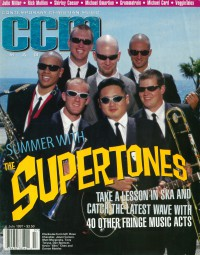

CMnexus
:
Contemporary Christian culture, music, and media.
Magazines
Profiles
Dove Awards
cmnexus.org
CM
nexus
→
Profiles
→
U
→
Dave Urbanski
Dave Urbanski
< -- Prev
ious
Next-- >
1
2
3
4
5
6
7
8
9
10
Writing credits listing
Mar 1995
in
Syndicate
#45
Resurrection Band
-
Lament
1995
in
Cornerstone
23.106
Charlie Peacock
-
Everything That's on My Mind
1995
in
Syndicate
#46
This Train
-
You're Soaking In It
Aug 1996
in
CCM
19.2
"Pop Goes the Pig"
Paul Q-Pek
Sep 1996
in
CCM
19.3
Phil Keaggy
-
220
,
Acoustic Sketches
Sep 1996
in
YouthWorker
13.1
King's X
-
Ear Candy
Nov 1996
in
CCM
19.5
"Hundred To One"
One Hundred Days
Charlie Peacock
-
In the Light: The Very Best of Charlie Peacock
Dec 1996
in
CCM
19.6
"Iron On Fire"
Skillet
Jan 1997
in
CCM
19.7
Bryan Duncan
-
Blue Skies
"Age to Age"
Age of Faith
Bryan Duncan
-
Blue Skies
Jan 1997
in
YouthWorker
13.3
The Ocean Blue
-
The See The Ocean Blue
Feb 1997
in
CCM
19.8
"the Preacher's Life"
Andraé Crouch
"Sing It, Sister"
Sandra Crouch
Mar 1997
in
CCM
19.9
Petra
-
Petra Praise 2: We Need Jesus
T-Bone
-
Tha Hoodlum's Testimony
Tony Vincent
-
One Deed
May 1997
in
CCM
19.11
"Independents' Day"
Five Minute Walk Records
,
gray dot Records
,
Organic Records
,
BEC Records
The New Holy Order:
Sarah Jahn
May 1997
in
YouthWorker
13.5
U2
-
Pop
Jun 1997
in
CCM
19.12
Plumb
-
Plumb
"Chatty Cathy"
Kathy Troccoli
"San Diego Sports Arena, San Diego, CA"
Sixpence None the Richer
,
The Katinas
,
The Dynamic Twins

Jul 1997
in
CCM
20.1
"One Crazy Summer"
The Supertones
,
Ska
"Catch The Wave"
The Supertones
,
Five Iron Frenzy
,
Squad 5-0
,
The Insyderz
,
Ska
"A Short Lex-ska-con"
Ska
"Pool Party - Some Like It Hard"
Trends in hard music:
Metal
,
Dance
,
Punk
,
Ska
Aug 1997
in
CCM
20.2
"Humphrey's, San Diego, CA"
Take 6
Sep 1997
in
CCM
20.3
"Tracing The Call"
The Call
"Show Your Love"
Demonstrations of Love
Third Day
-
Conspiracy No. 5
Oct 1997
in
CCM
20.4
"Party of Five"
Geoff Moore & the Distance
Zilch
-
Platinum
Nov 1997
in
CCM
20.5
"Family Ties"
Angie and Debbie Winans
Phil Keaggy
,
Wes King
,
Scott Denté
-
Invention
Rose Blossom Punch
-
Ephemere
Dec 1997
in
CCM
20.6
various artists -
Mindy's Revenge: 20 Killer Cuts!
Jan 1998
in
CCM
20.7
"Market Watch"
general market artists & faith
Jennifer Knapp
-
Kansas
Model Engine
-
The Lean Years Tradition
Jan 1998
in
YouthWorker
14.3
King's X
-
Best of King's X
Feb 1998
in
CCM
20.8
Carman
-
Mission 3:16
Mar 1998
in
CCM
20.9
Sarah Masen
-
Carry Us Through
various artists -
Tooth & Nail 4th Anniversary Set
Apr 1998
in
CCM
20.10
"The Week That Was"
Cindy Morgan
"Flying Solo: On Their Own"
Angela Crimi
,
Sarah Hart
,
Mancy A'lan Kane
,
Jennifer Knapp
,
Michelle Tumes
,
Heather Miller
,
Trin-I-Tee 5:7
"Mars & Venus: Strong Women and Their Men"
Wilshire
,
Mayfair Laundry
,
Bon Voyage
"The Furies"
The Furies
"In Country: Navigating NAMMS Six-String Armada Without Getting Sixed"
< -- Prev
ious
Next-- >
1
2
3
4
5
6
7
8
9
10
CMnexus
(noun)
The magazine index
of modern music
and Christianity
© 2011 CMnexus. Last updated May 2025.
Contact:
Rants and other correspondence to:
editor -AT- cmnexus
-DØT- org
About